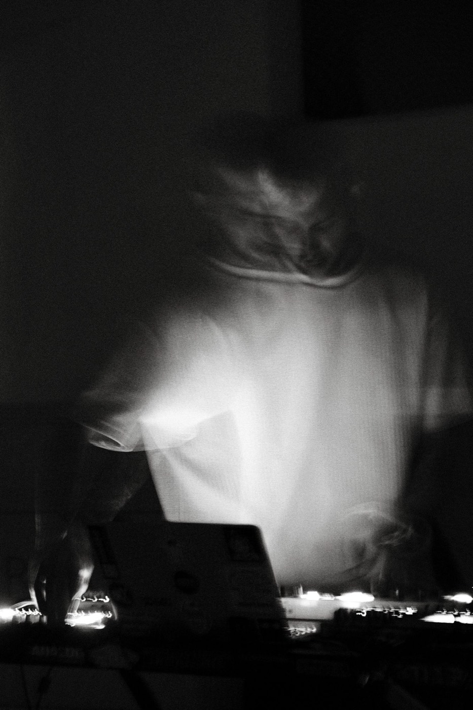
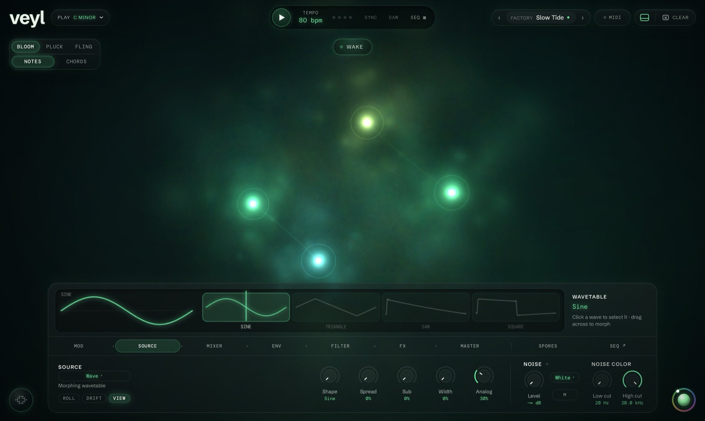
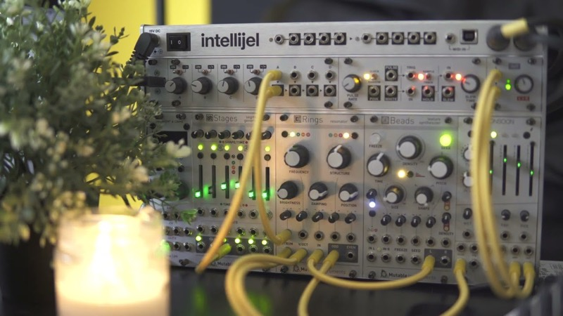
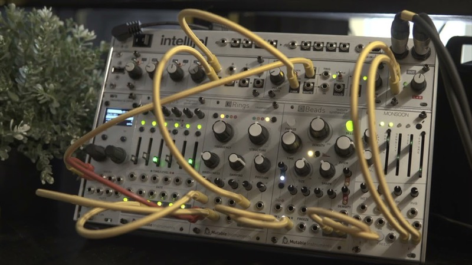
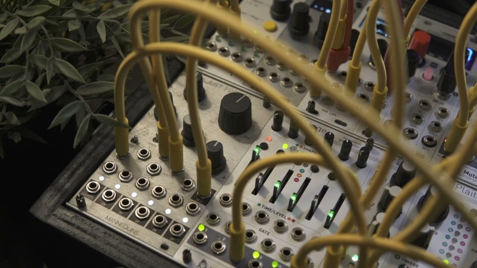
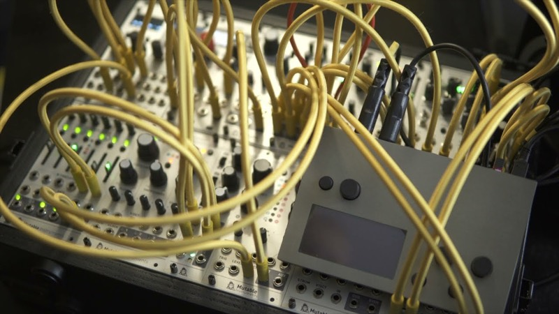

Rome, Italy
Music producer & sound designer.
I produce, mix and write electronic, alternative and indie pop music in Rome. I also design sounds and build instruments.

Producer · mixing engineer · composer · teacher
Instagram · @andrea_marzilli
Credits, sounds and the work in progress, day to day.
Open Instagram ↗01 · Music & credits
Records
Produced, mixed, often written.
On every release below I am producer and mixing engineer. On RIVE and House of Waves I also wrote the music.
My solo EP, in the making
Next to the work I do for other artists, I am writing and producing a solo EP: electronic music in the area of Rival Consoles, Kiasmos and Aparde.
How I make records
I am drawn to the moment of creation, where acoustic and natural elements meet the vibrations of electronic instruments. I build complex waveforms, look for imperfection in noise, and use the organic textures of field recordings. Every instrument is fair game: percussion and samplers, eurorack modules, acoustic guitars, analogue synthesizers and digital effects.
Highlights
- RIVE (2018–2025, electronic duo). “4.40” was selected for the soundtrack of season 2 of Neumatt (SRF / Zodiac Pictures), distributed on Netflix. Releases on Steyoyoke and its sub-label Inner Symphony, and on Ogami Music. The project closed in 2025 with the EP Still in Motion.
- House of Waves (2024–2026). My duo with singer and songwriter Giulia Poppy, formed in Rome in 2024 and closed in 2026. I produced, mixed and wrote the music for “Flowers”, “Bodies” and “You Bruise Your Knees and I Bleed”. What I am proudest of is the production: it moves across styles instead of repeating one.
- Heneru & Thio. Singer Thio and Heneru make electronic pop crossed with alternative rock, chill-pop and lo-fi; they signed with Ogami Music in 2024. I have produced and mixed their records since then: six releases to date, among them “Play With Fire”, “HYNTOXICATED” (produced with Heneru) and “The Meaning of Everything”. Here too, the multi-stylistic production is what I enjoy most.
Credits by artist
- RIVEproducer · mix · composer
- 4.402024 Two Forests2024 Anima2024 If This Were My Dream2024 Iridescence2024 Paused (RIVE Remix)2024 Armonia2025 Sturm Und Drang2025 Ipnosi2025 Notte2025 Fioritura2025 It Might Mean2025 A Travel In Your Soul2025 Arde2025 Indigo2025 Anima (Rework Edition)2026
- House of Wavesproducer · mix · composer
- Flowers2025 Bodies2026 You Bruise Your Knees and I Bleed2026
- Thio & Heneruproducer · mix
- Play With Fire2024 Bittersweet Lullaby2024 KINTSUGI2025 HYNTOXICATED2025 EPIC2025 The Meaning of Everything2026
Years are release dates on Spotify.
Listen
Spotify: RIVE · House of Waves · Thio · Heneru
02 · Unseen Audio
Veyl & sound design
The unseen, made visible.
A generative synthesizer you play by touching a canvas.
Veyl, by Unseen Audio, is in preview with a small group of artists, as VST3, AU and standalone for macOS. Notes bloom, ring and fade; spores bounce and play; Wake listens to what you play and keeps an evolving line going. Underneath: four stackable layers (Wave, FM, Sample, Air), a 24 dB ladder filter and four effects (Echo, Memory, Space, Tape).

Presets
I design the sound, then I make it behave: levels, macros, names. All 36 start from a clean Init and share one loudness (−24 LUFS), measured with a script.
- Slow Tide
- Glass Garden
- Paper Piano
- Dust Choir
- Under Ice
- Lantern Bells
- Whale Song
- Starfield
Sound design beyond Veyl
I also work with hardware, a eurorack system and a Monome Teletype (see Watch). For others, I designed the soundtrack for Dispositivi della Memoria by Elisa Selli (Venice Biennale) and “Birth” for the AI World Building Contest.
03 · Watch
Hardware on video
Eurorack jams and patch notes.
Jams and sketches with my eurorack system and other hardware.
On YouTube

3:07Rings from Mutable Instruments is my favorite oscillator
3:44Rings into Beads into Monsoon
3:21Mannequins Just Friends as a sound source: eurorack ambient jam
2:07Monome Norns Dronecaster + VCA: eurorack synthesizers jamOn Instagram
04 · AI workflow
AI in my workflow
From instrument idea to shipped plugin, with every claim measured.
I define how an instrument should sound, look and behave. Claude Code writes the code, and I verify the result.
- Prototype, then build.A working web prototype first, then a native C++/JUCE engine: from the first prototype in October 2026 to a VST3/AU plugin preview in November.
- Verify, don’t assume.Distortion, aliasing, loudness, CPU and frame times are measured. The plugin passes pluginval at strictness 10 in VST3 and AU, and AddressSanitizer found and fixed a rare reverb click. What needs an ear is reported as such.
- Document as part of the product.A 73-page manual, a Quick Start and a cheat sheet, generated from one source with automatic checks for layout, image resolution and links.


From the Veyl manual. Click a page to enlarge.
What this means on a team
- From an instrument idea to a playable prototype, with a clear view of what is solid and what is not.
- Sound libraries organised, balanced and checked with scripts and measurements.
- Manuals, quick-start guides and tutorials that stay in step with the product.
05 · About
Andrea Marzilli
A single note could be the universe where we live in.
Italian producer, sound artist and teacher from Rome.
I started at fifteen with music theory, guitar and piano, then moved to electronic music and sound design: Ableton Live with my mentor Edoardo Pietrogrande, then synthesizers, which changed how I think about sound. Today my work moves between records, instruments and teaching, and I am happiest where the three meet. Right now I am also making a solo EP of my own.
Teaching
Since 2020 I have taught music production and synthesizer theory and technique at Sonus Factory, Music Performance Institute, in Rome. In 2023 I was also awarded the professorship of Creative Software technique for the BA in Popular Music. I teach as a facilitator: students take risks, question what they hear, and leave with their own voice. I also help them understand the industry and freelance practice.
Path
- 2020 – nowMusic production teacher, Sonus Factory, Rome
- 2024 – 2026House of Waves, duo with singer and songwriter Giulia Poppy: producer, mixing engineer and composer
- 2018 – 2025RIVE, electronic duo: producer, mixing engineer and composer
- 2018 – 2021BA (Hons) Popular Music, Music Production, University of Chichester, First Class
- 2015 – 2018Electric guitar diploma, Sonus Factory, Rockschool Grade 8
Studied with Simone Gianlorenzi and Bruno Marinucci (guitar), Feliciano Zacchia and Edoardo Simeone (piano and theory), Daniele Vantaggio and Francesco Pierguidi (sound and recording).
06 · Contact
Say hello
Productions, collaborations, roles, or just a hello.
- Emailandremarzilli@gmail.com
- Instagram@andrea_marzilli ↗
- Linkslinktr.ee/andrea_marzilli ↗
- YouTube@andreamarzilli ↗
- TeachingSonus Factory ↗
- ProfileOne-page profile (PDF)
Instagram · electronic architecture
The quickest way to see what I am working on: credits, sounds, hardware and news from Unseen Audio.
@andrea_marzilli ↗